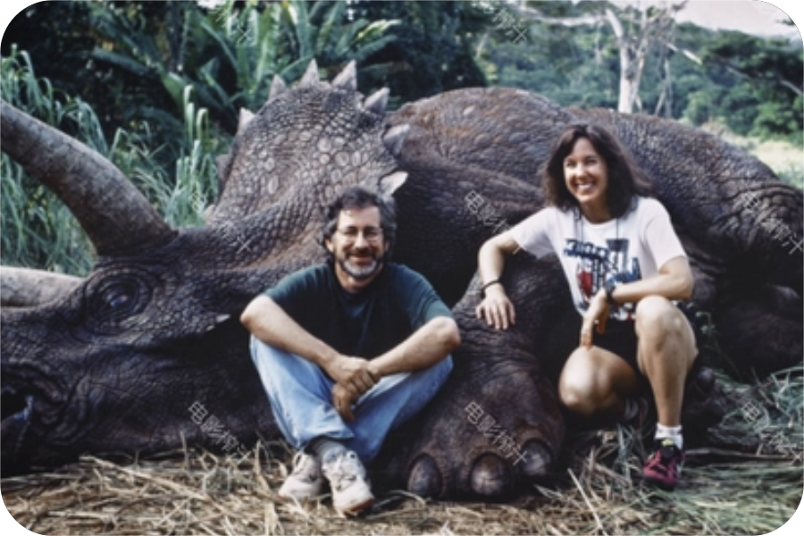
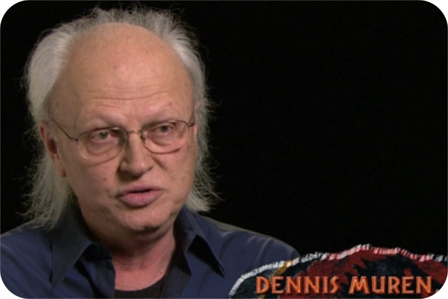
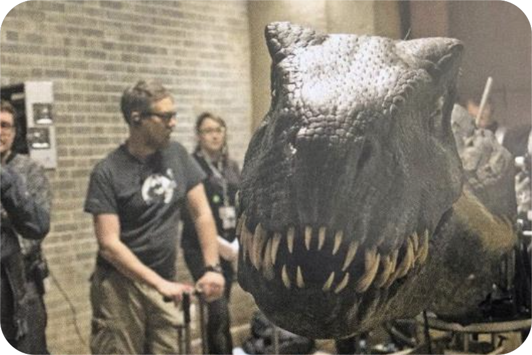
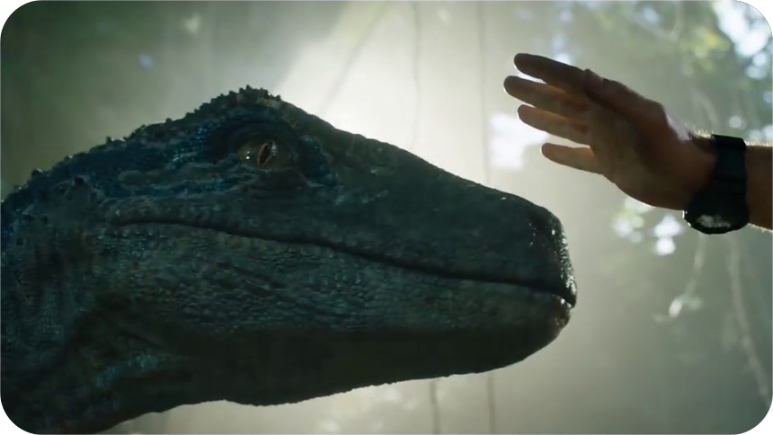

NEWS
Dinosaurs and genetic technology have always been interests of Michael Crichton. In 1983, he conceived a script. Initially, it centered around a graduate student eager to resurrect dinosaurs. Later, it shifted to a story about a ruthless capitalist’s insatiable desire to profit by resurrecting dinosaurs to build a theme park, ultimately ending in failure.The novel “Jurassic Park” melds ideas of genetic engineering, paleontology, chaos theory, and criticism of entertainment capitalism, resembling a contemporary “Frankenstein” with metaphors akin to Prometheus and Pandora. In the realm of film and adaptation, Michael Crichton crossed paths with Spielberg. In 1989, they discussed adapting Crichton’s other novel “ER” into a play. During this interaction, Spielberg, curious about Crichton’s ongoing projects, became fascinated when Crichton revealed the yet-to-be-published “Jurassic Park” story. This narrative captivated Spielberg, himself a dinosaur enthusiast, who saw the potential in bringing dinosaurs to life on the silver screen. He believed that showcasing lifelike dinosaurs would be a groundbreaking achievement, moving beyond museum fossils to immerse audiences in an unprecedented experience. Upon acquiring the adaptation rights to “Jurassic Park,” Spielberg faced a monumental challenge: how to make audiences believe in the authenticity of the dinosaurs they would see on-screen.

This challenge was not new in the history of filmmaking. From the Lumière Brothers’ early screenings of “Arrival of a Train at La Ciotat,” which startled audiences unfamiliar with cinema, to influential early monster films like “King Kong,” which used models yet still elicited fear, the issue persisted. Thus, Spielberg’s team embarked on the daunting task of creating convincing dinosaurs on-screen, a feat essential to the success of “Jurassic Park.”
In essence, "Jurassic Park" and "King Kong," over 60 years prior, belong to the same genre of monster films. Spielberg himself was deeply influenced by "King Kong," a fact he reiterated multiple times during the preparation for "Jurassic Park."This groundbreaking film marked a significant milestone in cinematic history, as it relied on two primary methods to bring enormous creatures to life on the big screen. The first method, a time-honored tradition, utilized stop-motion animation, similar to the technique employed in "King Kong."
During the preparations for "Jurassic Park," Spielberg enlisted Phil Tippett, then and even now considered one of the world's top stop-motion animators. Despite Tippett's mastery of the craft, he couldn't overcome the inherent issue of motion stuttering.Spielberg aimed for seamless dinosaur movements in "Jurassic Park." It was then that Dennis Muren, another visual effects supervisor at Industrial Light & Magic (ILM), proposed creating digital dinosaurs using CGI (Computer Generated Imagery) and integrating them into the live-action scenes.
Though CGI had been used in films before, notably in the 1973 movie "Westworld," and had a 20-year history by the time of "Jurassic Park's" production, it wasn't as widespread as it is today.While Muren's team had experience with various CGI characters and had even won Oscars, they had never ventured into animal animation, let alone dinosaurs from 65 million years ago. The realism of the digital dinosaurs' movements, textures, and depth was a significant concern.

The demo produced by Muren's team impressed Spielberg, showcasing remarkably fluid dinosaur movements. When Spielberg informed Tippett that they would no longer be using his stop-motion animation and instead opted for Muren's digital team, Tippett lamented his role in the film industry, quipping, "I've just become extinct." Spielberg even used this line as dialogue in the movie.This seemingly casual remark marked a significant turning point in the history of cinema. Looking back, Spielberg, Muren, and their team not only overcame the visual effects limitations of a single film but also recognized the impending trend of digital effects technology in filmmaking. Their work wasn't merely about the success of one movie but about leading an industry-wide shift.
It's not an overstatement to say that "Jurassic Park's" tremendous success paved the way for the widespread use of CGI in Hollywood and globally.

Even after deciding to use CGI for the dinosaurs, Spielberg didn't simply discard stop-motion animation. He hired Tippett as a motion consultant for the digital dinosaur effects team, giving him the title of "Dinosaur Supervisor" for the film.Tippett used traditional stop-motion animation techniques to simulate dinosaur movements, which were then realized by Muren's team on computers. Interestingly, Tippett even had the CGI animators mimic dinosaur movements, allowing them to develop muscle memory for realistic actions, turning the digital dinosaurs into extensions of the animators themselves.

During the pre-production phase, Tippett had already created stop-motion animatics for two key scenes: the Tyrannosaurus rex attacking the tour vehicles and the Velociraptors' kitchen encounter. Spielberg didn't waste Tippett's efforts; these animatics served as the basis for filming these scenes in the movie.In addition to the groundbreaking shift from stop-motion animation to CGI, achieving the realistic dinosaurs in "Jurassic Park" also relied on another technique: animatronic puppets.